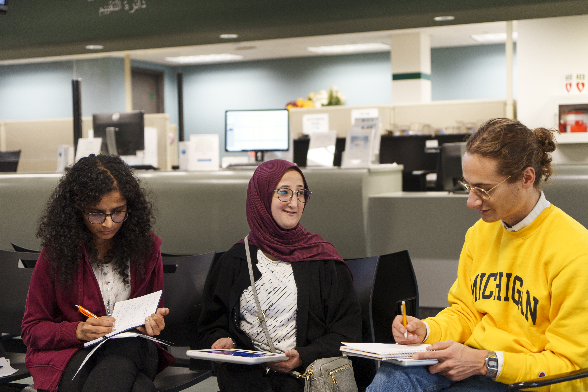

Build a Strong Project Partnership
Establishing professional communication, conducting initial meetings, and finalizing partnership agreements.
Value & Narrative
First impressions shape the trajectory of a partnership. The starting phase is where abstract project ideas turn into structured, professional commitments. By establishing clear team contracts, co-creating agendas, and aligning on project scope early, you build psychological safety within your team and trust with your client. Learning how to navigate early ambiguity is one of the most valuable professional capabilities you will gain at UMSI.
Focus & Objectives
- Communication: Draft clear, professional outreach to launch working relationships.
- First Meetings: Structure productive kickoff meetings that define roles and project bounds.
- Formalizing Agreements: Document team commitments and scope agreements shared by all stakeholders.
Make Your First Meeting Count

The kickoff meeting is where your team and your partner agree on what you will work on,
who is responsible for what, and how you will stay in touch. Share an agenda ahead of
time, take notes during the conversation, and leave with next steps that everyone can
review.
Questions to Bring
- What does success look like for your organization?
- Who will be our main contact, and how often should we meet?
- What limits, such as time, tools, policies, or budget, should we plan around?
- How would you like to receive progress updates and give feedback?
- Which parts of the project are most important to finish first?
After the Meeting
Send a short thank-you message that summarizes what you agreed on, including roles,
scope, and next steps. If anything changes later, update your written agreement so your
team and your partner stay aligned.
Featured Resources & Handouts